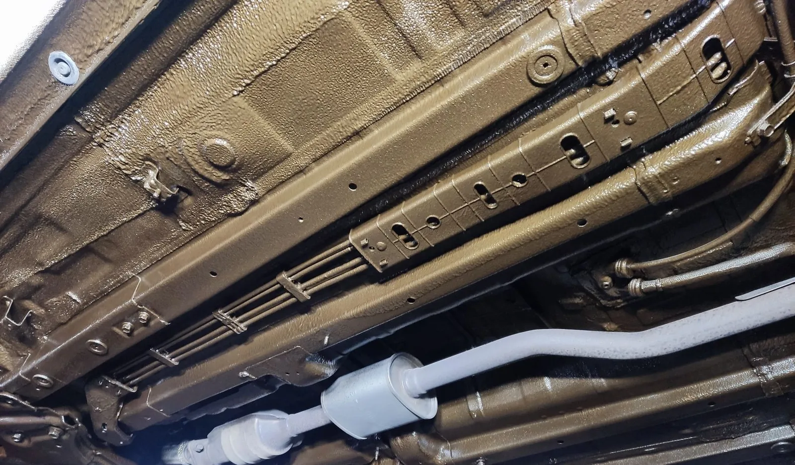
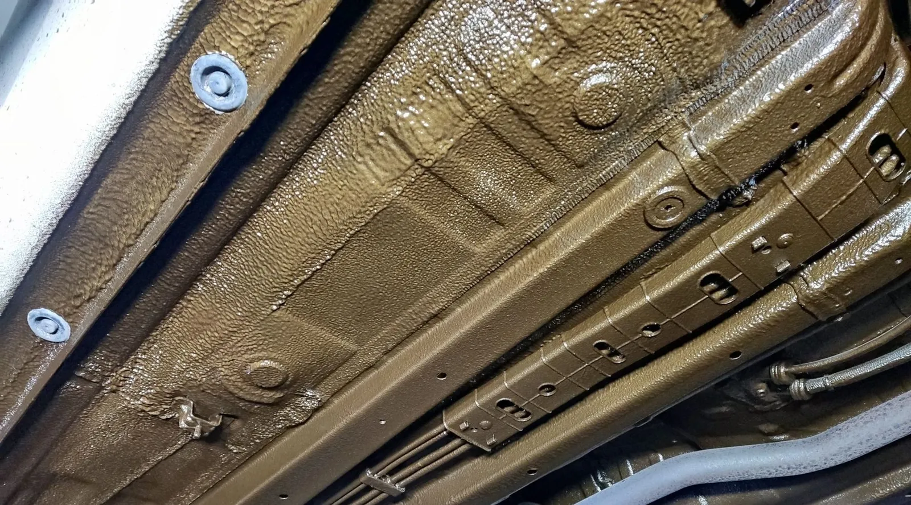
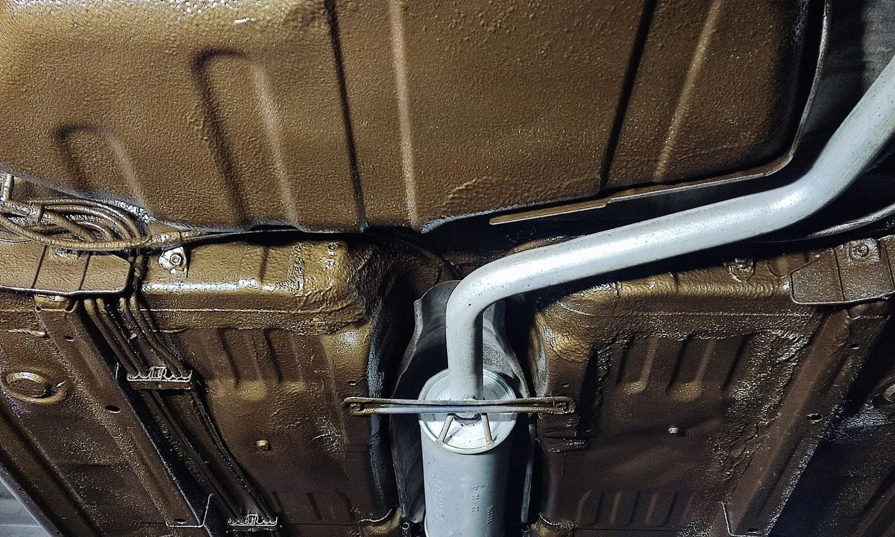
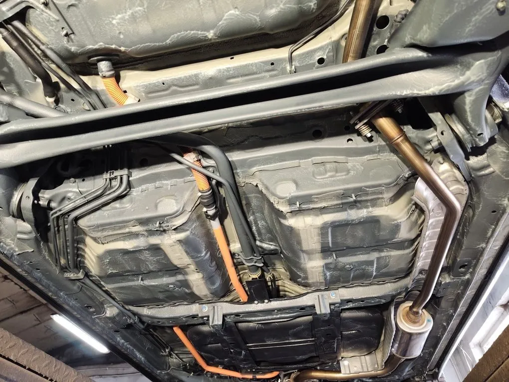
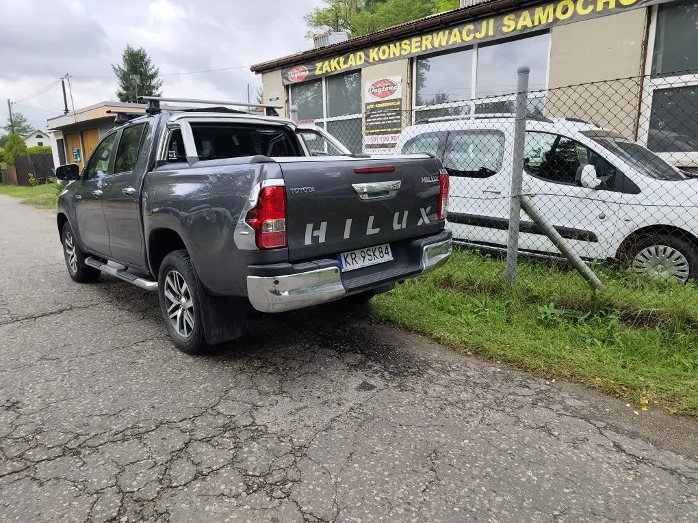
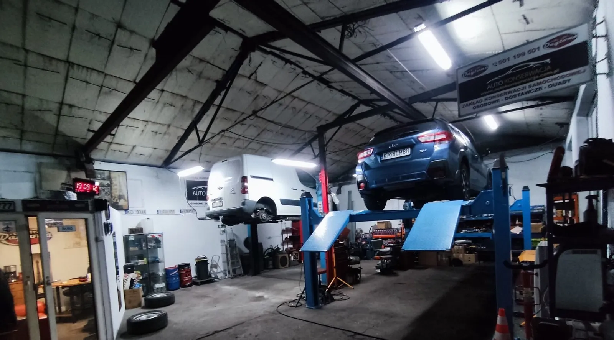

SUV miejski
Toyota Yaris Cross
Konserwacja podwoziaProfile
Auta z salonu, przed odbiorem z Zakładu. Konserwacja podwozia, progów i nadkoli, zdjęcia przed i po wysłane na telefon.
Chcę podobny efekt
Konserwacja podwozia · Chrzanów i okolice
Nowe auta z salonu, używane i starsze. Konserwacja na hali, środkami z 15-letnim okresem ochrony – a na czas usługi dostajesz bezpłatnie auto zastępcze.
Najpierw oglądam podwozie na podnośniku, potem mówię, co trzeba zrobić. Bez dopisywania usług, których auto nie potrzebuje.

Profile zamknięte i progiŚrodek wchodzi tam, gdzie rdza zaczyna się od środka i widać ją za późno.Cena z materiałem, na gotowo
Zawieszenie i podzespołySanki, wahacze, bak, stalowe przewody hamulcowe – w cenie, bez dopłat.Cena z materiałem, na gotowoPrzesuń suwak. Z lewej fabryczne podwozie nowego auta, z prawej podwozie po konserwacji w moim Zakładzie.

Mycie, odtłuszczacz, odrdzewiacz, bloker rdzy, inhibitor korozji, środek konserwujący i wosk. Zdjęcia przed i po dostajesz na telefon.
Chcę taki efektZdjęcia poglądowe – dwa różne auta z Zakładu.
Auta z salonu, przed odbiorem z Zakładu. Konserwacja podwozia, progów i nadkoli, zdjęcia przed i po wysłane na telefon.
Chcę podobny efekt
Pickup na podnośniku w hali. Podwozie, zawieszenie i przewody hamulcowe zabezpieczone środkiem nakładanym w kilku warstwach.
Chcę podobny efektTak wygląda podwozie po robocie: jednolita warstwa środka na blasze, progach i podłużnicach, bez prześwitów.
Chcę podobny efektAuto stoi na hali przez cały czas – schnie bezpiecznie i nikt go nie wystawia pod chmurkę.
Chcę podobny efektBak, przewody i tył podwozia zabezpieczone dokładnie, z osłoniętym układem wydechowym.
Chcę podobny efektWybierz rodzaj auta, wielkość i zakres. Oddzwonię z ceną z materiałem – na gotowo, bez dopłat.
Schemat przekroju blachy – tak przybywa warstw na podwoziu Twojego auta.
Całe podwozie i podzespoły myję profesjonalnym środkiem (m.in. FP2) pistoletem natryskowym. Potem suszę kompresorem i ręcznie.
Czysta, odtłuszczona blacha to warunek przyczepności. Bez tego nawet najlepszy środek odejdzie po pierwszej zimie.
Ogniska korozji usuwam odrdzewiaczem, ręcznie i maszynowo. Skorodowane elementy piaskuję, gdy jest potrzeba.
Pierwsza warstwa ochronna. Zatrzymuje to, czego nie da się usunąć mechanicznie.
Wnika w pory i spoiny – chroni tam, gdzie pistolet nie sięga wzrokiem.
Profesjonalna masa nakładana maszynowo 5–6 razy, czasem więcej. Odporna na kamienie i sól, wycisza auto.
Ostatnia warstwa odpycha wodę. Potem auto schnie na hali – dlatego nie oddaję go na drugi dzień.
| Typowa „konserwacja” | W moim Zakładzie | |
|---|---|---|
| Gdzie | Na kanale albo na trawie | Hala z podnośnikami – widać każdy centymetr |
| Środek | Bitex, „baranek”, środki z internetu – często rozcieńczone | Tylko do użytku profesjonalnego, według karty technicznej producenta |
| Przygotowanie | Smarowanie po brudzie i rdzy | Mycie, suszenie, odtłuszczacz, odrdzewiacz, piaskowanie, gdy trzeba |
| Warstwy | Jedna, „na oko” | Pistoletem 5–6 razy, czasem więcej – bez braków |
| Zawieszenie | Za dopłatą albo wcale | Sanki, wahacze, przewody hamulcowe – w cenie |
| Czas | 7–10 dni w kolejce albo „na jutro” | Ok. 3–4 dni, od razu po przyjęciu. Schnie na hali |
| Dowód | Trzeba uwierzyć na słowo | Zdjęcia przed i po, środki wpisane na zleceniu |

Nie robię na kanale ani na trawie, jak większość – tak nie da się tego zrobić fachowo. Pracuję na hali, na podnośnikach, środkami do użytku profesjonalnego, według karty technicznej producenta.
Pokazuję klientowi, czym myję i konserwuję, jakim pistoletem i narzędziami pracuję. Po robocie każdy dostaje na telefon zdjęcia podwozia przed i po.
Witold Poznański
Cenę podaję przez telefon, zawsze z materiałem i na gotowo – bez dopłat za zawieszenie czy przewody. Zależy od wielkości auta i stanu podwozia, dlatego wybierz auto w wycenie albo zadzwoń: 501 199 501.
Około 3–4 dni. Biorę się za auto od razu po przyjęciu, nie trzymam go tygodnia w kolejce. Na drugi dzień nie oddam, bo zabezpieczenie musi wyschnąć – auto stoi w tym czasie na hali.
Moim autem. Na czas usługi daję bezpłatnie auto zastępcze: zostawiasz swoje, wracasz naszym.
Tak. Blacha w nowych autach jest cienka, a fabryczne zabezpieczenie nie chroni wszystkiego. Korozja na nowym aucie to przede wszystkim utrata wartości przy sprzedaży.
Pokazuję środki i narzędzia, a na telefon wysyłam zdjęcia podwozia przed i po. Środki wpisuję na pisemne zlecenie i gwarancję.
Używam środków z okresem ochrony 15 lat podanym przez producenta, nakładanych zgodnie z jego kartą techniczną.
Tak. Zakład ma też status Rzetelna Firma.
Oddzwonię z ceną i najbliższym wolnym terminem. Ze względu na specyfikę pracy najlepiej po prostu zadzwoń.
501 199 501ul. Leśna 1a, 32-500 Chrzanów
Chrzanów-Kąty, od strony Libiąża
witopoz@wp.pl
Faktura VAT